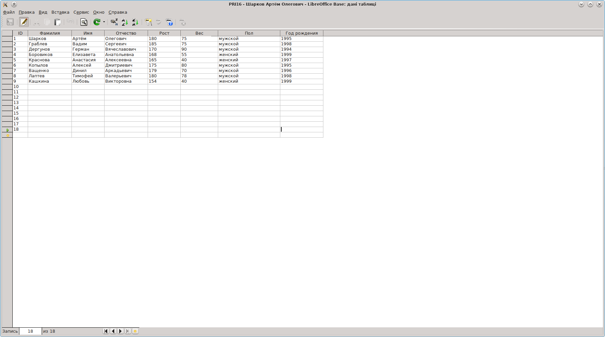
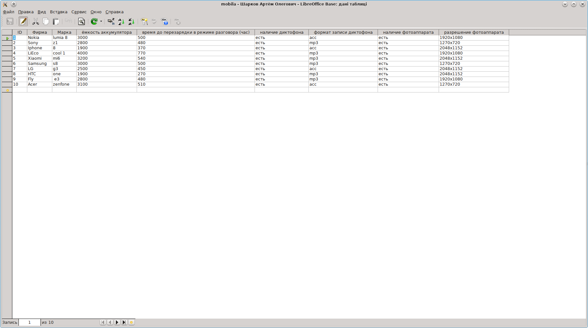
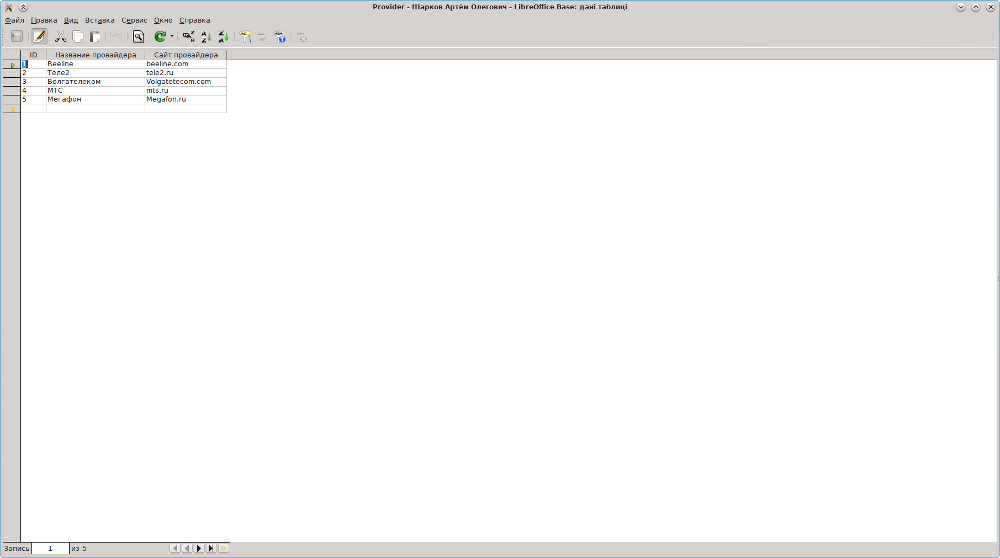
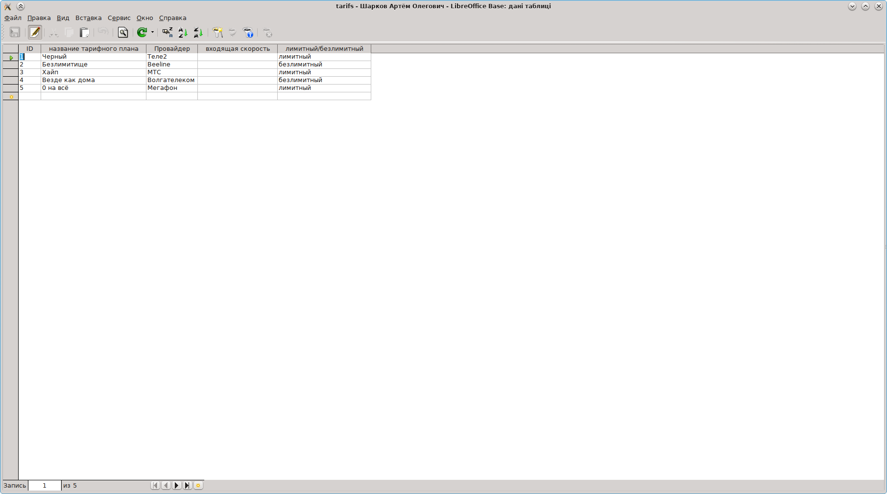
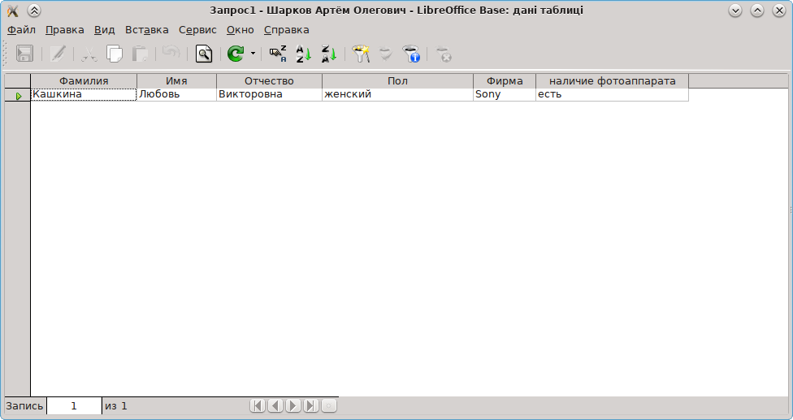
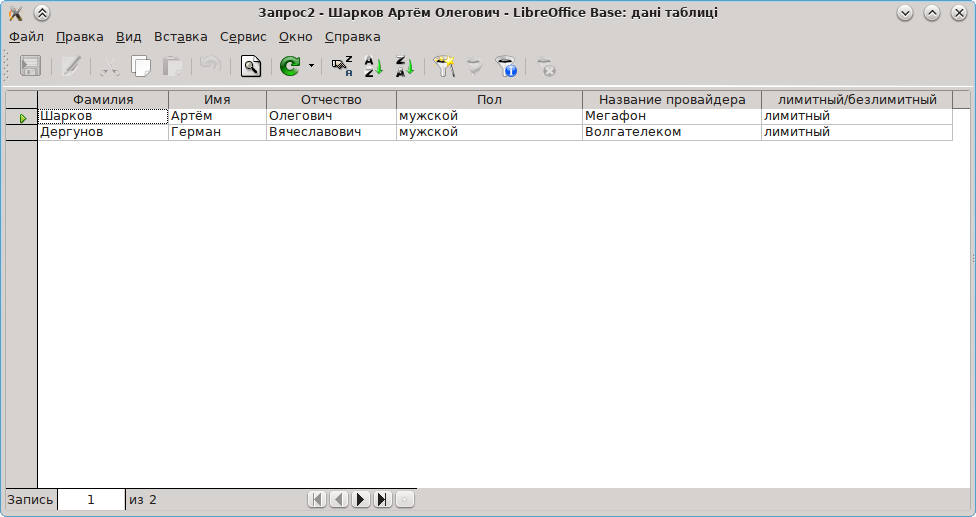
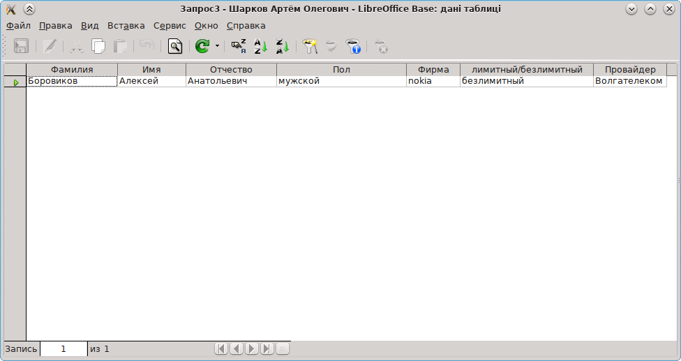
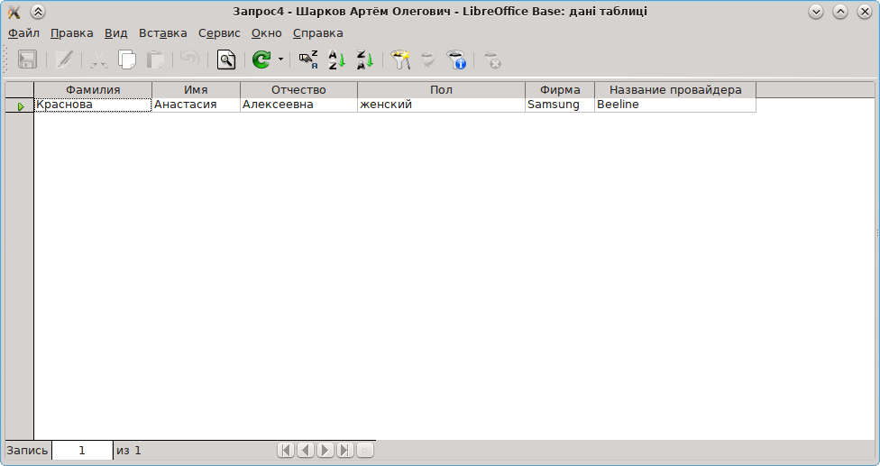

Тема: Работа с СУБД OpenOffice:Base.
Рекомендации и требования.
Установка и настройка.
1. Как правило, OpenOffice (иногда LibreOffice) уже установлен на компах лаборатории. То есть, всё готово для плодотворной работы.
2. Запуск Base — как и другие компоненты Office, из меню. На сайтах www.altlinux.org, или http://heap.altlinux.org в разделе документация лежат руководства по Base.
Работа с СУБД.
3. Далее необходимо создать в базе таблицу PRI21. Заполнить таблицу данными о всех студентах учебной группы. Структура таблицы:
«Фамилия, имя, отчество, год рождения, рост, вес, пол»
4. Создать в базе таблицу mobila — данные о мобильных телефонах (ввести не менее 10 марок!). Структура таблицы:
«фирма, марка, ёмкость аккумулятора, время до перезарядки в режиме разговора, наличие диктофона, формат записи диктофона (MP3, WAV, OGG, иной — указать какой), наличие фотоаппарата, разрешение фотоаппарата»;
5. Создать в базе таблицу provider — данные о провайдерах Internet'а Ульяновска, которые могут быть использованы студентами группы. Структура таблицы:
«название провайдера, сайт провайдера».
6. Создать в базе таблицу tarifs — тарифные планы провайдеров Internet'а, которые могут быть использованы студентами группы. Структура таблицы:
«название тарифного плана, провайдер, входящая_скорость, лимитный/безлимитный».
7. Продемонстрировать работу с Base. Выполнить запросы:
– «студенты женского пола, имеющие мобильник с фотоаппаратом»;
– «студенты мужского пола, у которых провайдер Теле2, тариф лимитный»:
– «студенты мужского пола, у которых мобильник Nokia, а провайдер Волгателеком, тариф безлимитный»;
– «студенты женского пола, имеющие мобильник Samsung, а провайдер Билайн (Корбина)»;
8. Требования к отображению информации: таблица в виде
«Фамилия, Имя, Отчество, <остальная информация запроса в текстовом виде>».







